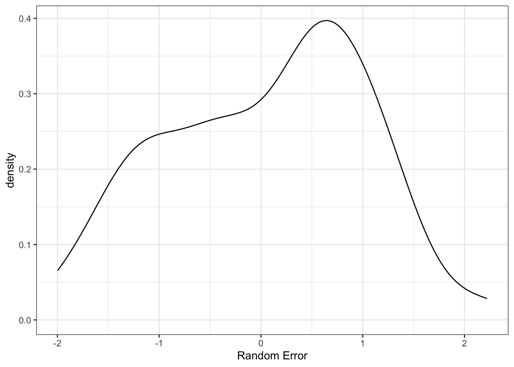

install.packages("simglm")simglm v0.7.4: Tidy Simulation
R
Simglm
Simulation
Tidy
I’m happy to formally announce a major update to the simglm R package. In brief, the updated package contains a new more robust syntax for simulating data, adds parallel processing support for replicating the simulation (or power analysis) using the future.apply package/framework, and new updated vignettes showing off the many options available in the tidy simulation syntax.
The package can be installed with the following code:
The package can then be loaded with:
library(simglm)Tidy simulation syntax
The tidy simulation syntax and new simulation functions take full advantage of using the pipe (i.e. %>%) from the magrittr package to chain together commands for readable code that highlights what is being simulated and when. In this framework, the simulation arguments are specified outside of the simulation commands to separate the specification of how the data should be simulated from the actual simulation. An example is most useful here.
Tidy simulation example
Suppose we wanted to generate data for two groups, such as the sex of the individual (male or female). We could write this statistical model as the following:
\[ outcome = \beta_{0} + \beta_{1} male + \epsilon \] where \(male\) is an indicator (i.e. dichomotous or dummy variable) that represents if the individual is a male or not. The outcome is the observed score of interest, could be test scores, depression scores, blood pressure, really anything of interest. The regression coefficients, \(\beta_{0}\) and \(\beta_{1}\) are estimated from the data and would be the intercept (in this case would be the mean of the females on the outcome) and the mean difference between the males and females respectively. Finally, it is common to have error, represented with \(\epsilon\). This model is the linear regression version of a two-sample t-test.
To simulate this data, the values for the regression coefficients (\(\beta_{0}\) and \(\beta_{1}\)) need to be specified, the \(male\) indicator variable, and the variance and distribution of the error term. The outcome is then determined based on those three terms. Let’s now use simglm to simulate data based on this two group model.
Specify simulation arguments
When using the simglm R package, the simulation arguments are first defined in a named list object. Required arguments to this named list that include the following arguments with a short description of what each represents.
formula: This mimics the model to be generated excluding any random error. If you have used thelmfunction to fit a linear regression, this would be the model equation that is fitted to that function.fixed: This includes variable specification as a list for the variable specified on the right hand side of the equation (i.e. to the right of the~in theformulaargument). Thefixedargument does not include the intercept or interaction terms.sample_size: The sample size or in this example, the number of rows in the data.error: This is a list of characteristics for the random error (i.e. variance, distribution, etc.), \(\epsilon\) in the above equation.reg_weights: These are the values for the \(\beta\) terms in the model. In this example there are two, one for the intercept and one representing the mean difference between males and females.
Below is an example specification for the linear model shown above that mimics a two-sample t-test.
sim_arguments <- list(
formula = outcome ~ 1 + sex,
fixed = list(sex = list(var_type = 'factor',
levels = c('male', 'female'))),
sample_size = 100,
error = list(variance = 1),
reg_weights = c(0, .15)
)From the above simulation arguments, the formula mimics the equation shown earlier with one small change, sex is used instead of male to reflect the grouping variable of male or female. The fixed argument warrants additional discussion. This argument is a named list where the named elements match the variable names specified on the right hand side of the formula argument. In this case, only one variable is specified, the sex variable. When specifying a variable, the type of variable to be generated is controlled with the argument, var_type. The var_type argument can take the following values:
factor: This represents a categorical or grouping variable that commonly only takes on a few unique values.continuous: This is a continuous variable that is generated using an r distribution function.ordinal: This generates ordinal or discrete data and is generated using thesamplefunction.time: This is not as useful here, but would be used when repeated measures or longitudinal data are simulated to represent when multiple observations are collected.
Of note, the “factor” and “ordinal” variable types are generated the same way, using the sample function, but are distinguished due to different general philosophies about the two variable types.
With “factor” and “ordinal” variable types, the different values that are possible for this variable can be specified with the levels argument. In the example above, “male” and “female” are passed as character strings indicating these are the values that will be passed to the sample function. The levels argument can take on characters or numeric values, although if character strings are meaningful, it is recommended to pass these to be more explicit about the different values generated.
Let’s now generate the data based on the simulation arguments above.
Generate one data set
There are four main simulation functions that will be used most frequently when doing the simulating of data. These simulation functions include:
simulate_fixed: This function simulates the fixed portion of the model or the portion to the right of the~in the model formula.simulate_error: This function simulates the random error (i.e. \(\epsilon\)).simulate_randomeffect: This simulates random effects if the data are nested or cross-classified. The use of this will come in another post soon.generate_response: This function generates the outcome variable or the term to the left of the~in the model formula.
The goal of each function is to simulate one aspect of the model which keeps the function specification simpler, allows users to see what is being simulated in specific steps, and allows users flexibility into what is being generated. Each of these functions take data as the first argument and the simulation arguments as the second argument. With the exception of the generate_response function, the three simulate_* function above can be specified in any order. The first time that a simulate_* function is called, the data argument needs to be specified as NULL meaning that no data has been generated.
Below is one way to generate the data using the simulation conditions and the first few rows of the simulated data are shown. Note, the seed was specified with the set.seed function to ensure replicable results. Without setting a seed, different results would be obtained everytime the simulation code was run.
library(tidyverse)── Attaching core tidyverse packages ──────────────────────── tidyverse 2.0.0 ──
✔ dplyr 1.1.4 ✔ readr 2.1.5
✔ forcats 1.0.0 ✔ stringr 1.5.1
✔ ggplot2 3.5.2 ✔ tibble 3.2.1
✔ lubridate 1.9.4 ✔ tidyr 1.3.1
✔ purrr 1.0.4
── Conflicts ────────────────────────────────────────── tidyverse_conflicts() ──
✖ dplyr::filter() masks stats::filter()
✖ dplyr::lag() masks stats::lag()
ℹ Use the conflicted package (<http://conflicted.r-lib.org/>) to force all conflicts to become errorsset.seed(10)
one_data_set <- simulate_fixed(data = NULL, sim_arguments) %>%
simulate_error(sim_arguments) %>%
generate_response(sim_arguments)
head(one_data_set) X.Intercept. sex_1 sex level1_id error fixed_outcome random_effects
1 1 0 male 1 -0.4006375 0.00 0
2 1 0 male 2 -0.3345566 0.00 0
3 1 1 female 3 1.3679540 0.15 0
4 1 1 female 4 2.1377671 0.15 0
5 1 1 female 5 0.5058193 0.15 0
6 1 0 male 6 0.7863424 0.00 0
outcome
1 -0.4006375
2 -0.3345566
3 1.5179540
4 2.2877671
5 0.6558193
6 0.7863424The data is similar regardless of the model run and the columns are appended based on the order that the simulate_* functions are called. For example, since the simulate_fixed function was called first above, these columns appear first in the simulated data. Then the error is shown and the outcome variable will always be last. In between the error and the outcome are two columns that can provide a check on various portions of the simulation. In this case, the “fixed_outcome” column is of most interest and can provide a check that the simulate_fixed function created data appropriately. The value for the “fixed_outcome” column should reflect the outcome for each row that does not depend on random quantities. In this case, since the only variable in the model is a dichotomous indicator variable, the “fixed_outcome” column should have two values, the mean for females and the mean for males.
To ensure that things look as they should based on the simulation arguments, we can do some descriptive and/or visual inspection.
Explore error
We can visualize the density of the random error term to ensure this makes sense.
ggplot(one_data_set, aes(x = error)) +
geom_density() +
theme_bw() +
xlab("Random Error")
We could also calculate the variance of this term to ensure it is close to the value specified. The larger the sample size, the closer it should be to the variance specified. Here is happens to be slightly less than 1, but it is close.
one_data_set %>%
summarise(error_var = var(error)) error_var
1 0.9402422Explore sex effect
The sex effect can also be explored. One simple check would be to count how many males and females are in the data. Note, I’m using the “sex1” variable which is the character version. The one named “sex” in the data represents the character variable turned into a numeric dummy variable used in the regression model.
one_data_set %>%
count(sex) sex n
1 male 53
2 female 47As can be seen, the number of males and females is about the same, but not exactly equal. The default behavior of the sample function is to generate groups with equal proportions. This can be specified directly however with an optional prob argument. See the sample function documentation for additional details for this.
Another useful check is to see how different the outcome is for the two groups. I will do this visually, but you can do it descriptively as well by calculating the mean values.
ggplot(one_data_set, aes(x = sex, y = outcome)) +
geom_boxplot() +
geom_jitter(alpha = 0.7) +
theme_bw() +
xlab("Sex") +
ylab("Outcome")As you can see, the males have a larger median, but there is quite a bit of variation in the two groups.
Replicate the simulation
It is often common to generate multiple simulated data sets. This can be done with the help of a single function, replicate_simulation. This function takes the simulation arguments as its only argument. The only additional argument that needs to be specified is the number of replications which is controlled by the replications argument. Below is the inclusion of the replications argument to do 100 replications of the simulation arguments. Note, the future.apply package is used to simulate the data using all available cores on the local machine. This is done by setting plan(multisession) which should word regardless of the operating system this code is ran on.
library(future)
plan(multisession)
simulation_arguments <- list(
formula = outcome ~ 1 + sex,
fixed = list(sex = list(var_type = 'factor',
levels = c('male', 'female'))),
sample_size = 100,
error = list(variance = 1),
reg_weights = c(0, .15),
replications = 100
)
replicate_sim <- replicate_simulation(simulation_arguments)The returned data element is a list that has the same length as the number of replications specified. The elements can be extracted as with any list.
head(replicate_sim[[100]]) X.Intercept. sex_1 sex level1_id error fixed_outcome random_effects
1 1 1 female 1 -0.5592370 0.15 0
2 1 0 male 2 1.3319519 0.00 0
3 1 1 female 3 2.0973185 0.15 0
4 1 1 female 4 0.5767978 0.15 0
5 1 1 female 5 -1.2387176 0.15 0
6 1 1 female 6 2.1479337 0.15 0
outcome
1 -0.4092370
2 1.3319519
3 2.2473185
4 0.7267978
5 -1.0887176
6 2.2979337The replication_simulation function calls the specific simulate_* functions based on what is included in the simulation arguments. For example, if the error simulation argument was omitted, the data would not include random error.
simulation_arguments <- list(
formula = outcome ~ 1 + sex,
fixed = list(sex = list(var_type = 'factor',
levels = c('male', 'female'))),
sample_size = 100,
reg_weights = c(0, .15),
replications = 100
)
replicate_sim <- replicate_simulation(simulation_arguments)
head(replicate_sim[[1]]) X.Intercept. sex_1 sex level1_id fixed_outcome random_effects error
1 1 1 female 1 0.15 0 0
2 1 0 male 2 0.00 0 0
3 1 0 male 3 0.00 0 0
4 1 0 male 4 0.00 0 0
5 1 0 male 5 0.00 0 0
6 1 0 male 6 0.00 0 0
outcome
1 0.15
2 0.00
3 0.00
4 0.00
5 0.00
6 0.00Notice that the error is specified as 0 for all records. This is likely not that as useful as specifying random error.
Next Steps
I plan to regularly post examples using the simglm package for simulating different models and also doing power for different models. I recently wrote a tutorial that includes some of this code and does power by simulation that can be found here: https://brandonlebeau.org/publication/simglm-power/.
More unit testing is needed for the new simulation syntax to test the new implementation and ensure that updates do not change other aspects of the code base. Implementing additional model features (such as increased support for GLM models, simulation non-linear models, etc) and writing about more examples of doing simulation or power analysis with the package.
Feedback on the syntax, suggested changes, and edits or collaborations are especially welcomed at this stage. Issues and collaborations can be submitted through the following two links: GitHub Issues and Pull Requests.